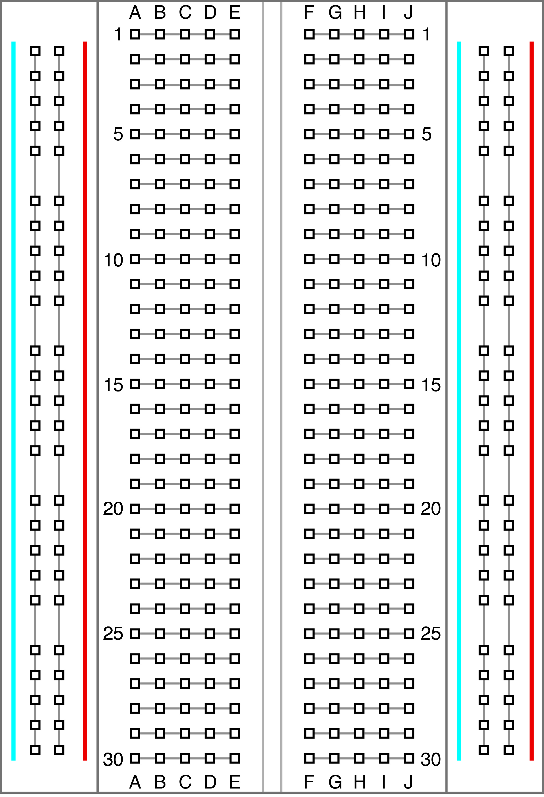

workshop0
week4 | RaspberryPi / Arduino
아두이노란?

오픈 소스 기반의 마이크로컨트롤러*가 내장된 보드 및 개발환경
아두이노 살펴보기
아두이노 부속품
저항(resistor) : 센서, 조명 등에 가해지는 전류의 양을 제한하기 위해서 사용(각 전자부품이 받아들일 수 있을 정도로)
아두이노 부속품
센서(sensor) : 외부의 자극을 컴퓨터가 알아들을 수 있는 신호로 전달하는 전자부품
아두이노 부속품
브레드보드 : 아두이노에 센서, led, 스피커 등을 연결할 때 납땜없이 쉽게 테스트해볼 수 있는 장치
아두이노 부속품
전선, 전원, led, 스피커 등등
오늘의 예제
빛 센서를 활용해서 브라우저-전구의 불을 켜보자
아두이노-p5.js사이 다리 놓기
아두이노 IDE를 열고 File>Examples>Firmata>StandardFirmata 스케치 열기
아두이노-p5.js사이 다리 놓기

상단 왼쪽 두번째 'upload' 실행해서 아두이노에 스케치 올리기
아두이노-p5.js사이 다리 놓기
터미널 열고
npm install -g p5bots-server
스케치 열기
week4>example_code>ledon
스케치 보기(index.html)
스케치 보기(sketch.js)

보드 설정 > 핀(9번) 설정 > onoff 설정
회로 연결하기
상단 그림처럼 회로를 연결해주세요.
아두이노-p5.js 연결 서버켜기
터미널 열고
bots-go -d [각자 ledon 폴더 위치]
브라우저에서 index.html열기
열고 버튼 누르면서 실행해보기
센서 값 받아 스케치에 반영하기
week4>example_code>photosensor
센서 연결하기

상단 그림처럼 회로를 연결해주세요
아두이노-p5.js 연결 서버켜기
(아까 열어둔 서버 닫고)
터미널 열고
bots-go -d [각자 sensor 폴더 위치]
브라우저에서 index.html열기
열고 센서 위에서 움직이면서 변화 관찰하기
(오른쪽 버튼>검사하기(or Inspect) 누르면 센서값 관찰 가능)
Mini-hackathon
센서들이 받아들이는 데이터를
p5.js를 활용해서 visualization 해보자.
데이터의 해석은 나름대로!
2인 1조, 30분 동안 만들고 발표하기
Mini-hackathon
potentiometor(회전수 감지)
Mini-hackathon
flex sensor(휨 정도 감지)
Mini-hackathon
Infrared sensor
Mini-hackathon
센서들이 받아들이는 데이터를
p5.js를 활용해서 visualization 해보자.
데이터의 해석은 나름대로!
2인 1조, 30분 동안 만들고 발표하기
homework
마지막주 발표회 준비를 위해 각자 최종 프로젝트의 간단한 설명, 사용할 기술, 필요한 준비물을 구글닥스에 정리해오기.